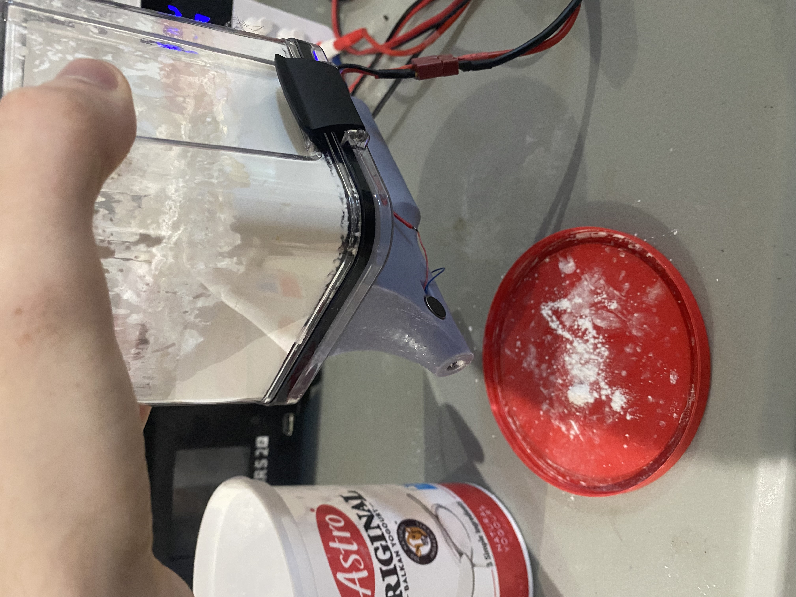
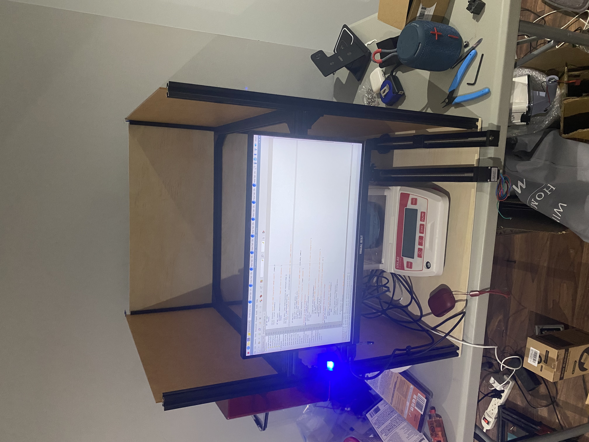
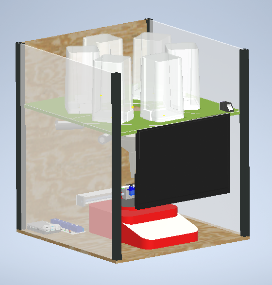

Revolutionizing pharmacy automation with prescription-customized medications using Raspberry Pi, fingerprint sensors, stepper motors, servos, and precision scales. Improving efficiency, accuracy, and eliminating human error in medicine dispensing.



Pharmacies require 100% accuracy. This system ensures patient-specific dosages with zero human error while speeding up dispensing times and reducing cost.